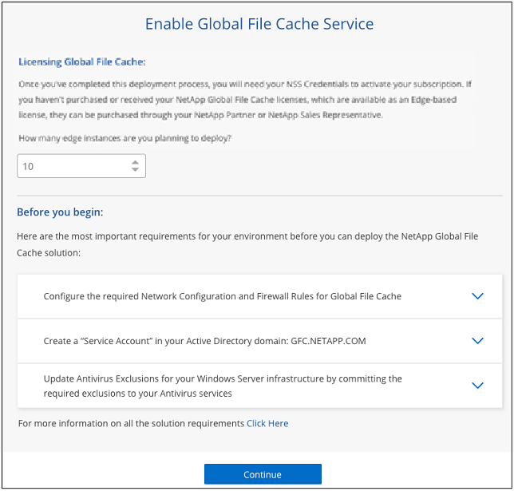
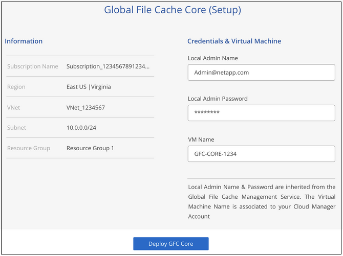
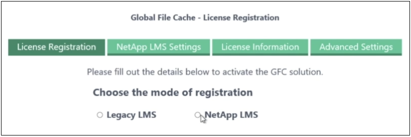
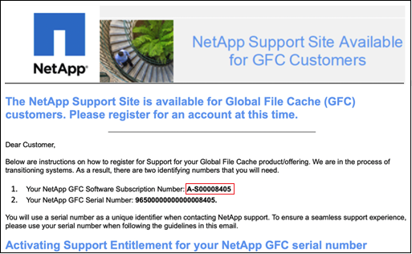
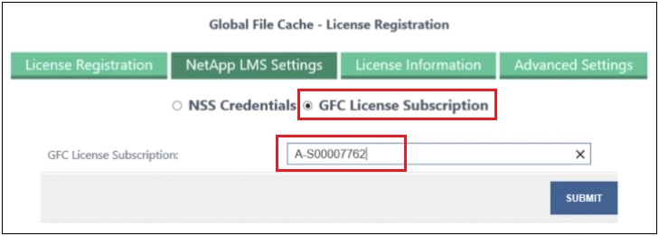
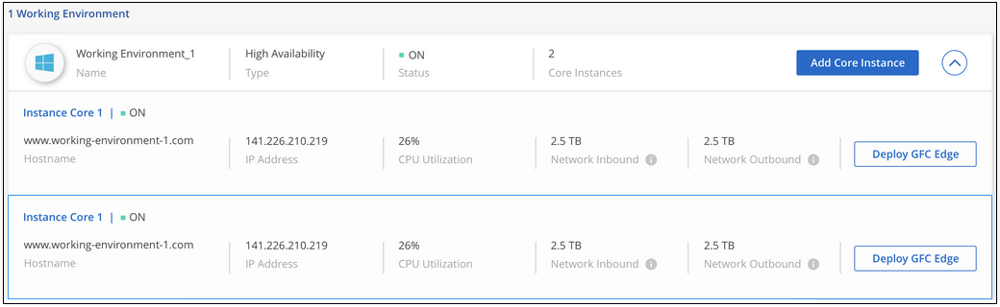

版本資訊
版本資訊
快速入門
 建議變更
建議變更
您可以使用 BlueXP 在工作環境中部署 BlueXP 邊緣快取管理伺服器和核心軟體。
使用 BlueXP 啟用 BlueXP 邊緣快取
在此組態中、您將在使用 BlueXP 建立 Cloud Volumes ONTAP 系統的相同工作環境中、部署 BlueXP 邊緣快取管理伺服器和 BlueXP 邊緣快取核心。
觀看 "這段影片" 以查看從開始到結束的步驟。
快速入門
請依照下列步驟快速入門、或向下捲動至其餘部分以取得完整詳細資料：
 部署 Cloud Volumes ONTAP
部署 Cloud Volumes ONTAP部署 Cloud Volumes ONTAP 並設定 SMB 檔案共用。如需詳細資訊、請參閱 "在 Cloud Volumes ONTAP Azure 中啟動"、 "在 Cloud Volumes ONTAP AWS 中啟動"或 "在Cloud Volumes ONTAP Google Cloud上啟動"。
 部署 BlueXP 邊緣快取管理伺服器
部署 BlueXP 邊緣快取管理伺服器在與 Cloud Volumes ONTAP 執行個體相同的工作環境中部署 BlueXP 邊緣快取管理伺服器執行個體。
 部署 BlueXP 邊緣快取核心
部署 BlueXP 邊緣快取核心在與 Cloud Volumes ONTAP 執行個體相同的工作環境中部署 BlueXP 邊緣快取核心的執行個體或多個執行個體、然後將其加入 Active Directory 網域。
 授權 BlueXP 邊緣快取
授權 BlueXP 邊緣快取在 BlueXP 邊緣快取核心執行個體上設定 BlueXP 邊緣快取授權管理伺服器（ LMS ）服務。您需要使用 NetApp 提供的新增資信或客戶 ID 和訂閱號碼、才能啟動您的訂閱。
 部署 BlueXP 邊緣快取 Edge 執行個體
部署 BlueXP 邊緣快取 Edge 執行個體請參閱 "部署 BlueXP 邊緣快取 Edge 執行個體" 在每個遠端位置部署 BlueXP 邊緣快取 Edge 執行個體。此步驟並未使用BlueXP完成。
部署 Cloud Volumes ONTAP 作為您的儲存平台
BlueXP 邊緣快取支援部署在 Azure 、 AWS 和 Google Cloud 中的 Cloud Volumes ONTAP 。如需詳細的先決條件、需求及部署指示、請參閱 "在 Cloud Volumes ONTAP Azure 中啟動"、 "在 Cloud Volumes ONTAP AWS 中啟動"或 "在Cloud Volumes ONTAP Google Cloud上啟動"
請注意下列其他 BlueXP 邊緣快取需求：
-
您應該在 Cloud Volumes ONTAP 執行個體上設定 SMB 檔案共用。
如果在執行個體上未設定 SMB 檔案共用、則會在安裝 BlueXP 邊緣快取元件期間提示您設定 SMB 共用。
在您的工作環境中啟用 BlueXP 邊緣快取
安裝精靈會引導您完成部署 BlueXP 邊際快取管理伺服器執行個體和 BlueXP 邊緣快取核心執行個體的步驟、如下所示。

-
選擇部署 Cloud Volumes ONTAP 的運作環境。
-
在「服務」面板中、按一下 * 啟用 * 以取得 _Edge 快取 _ 服務。

-
閱讀「總覽」頁面、然後按一下 * 繼續 * 。
-
如果 Cloud Volumes ONTAP 在這個例子中沒有 SMB 共享、系統會提示您輸入 SMB 伺服器和 SMB 共用詳細資料、以便立即建立共享區。如需 SMB 組態的詳細資訊、請參閱 "儲存平台"。
完成後、按一下 * 繼續 * 以建立 SMB 共用區。

-
在「全域檔案快取服務」頁面上、輸入您打算部署的全域檔案快取 Edge 執行個體數目、然後確定您的系統符合「網路組態與防火牆規則」、「 Active Directory 設定」和「防毒排除」的要求。請參閱 "先決條件" 以取得更多詳細資料。

-
在您確認已符合要求、或您擁有符合這些要求的資訊之後、請按一下 * 繼續 * 。
-
輸入您將用來存取 BlueXP 邊際快取管理伺服器 VM 的管理認證、然後按一下 * 啟用 GFC 服務 * 。對於 Azure 和 Google Cloud 、您可以輸入認證作為使用者名稱和密碼；對於 AWS 、您可以選取適當的金鑰配對。您可以視需要變更虛擬機器 / 執行個體名稱。

-
成功部署 BlueXP 邊緣快取管理服務之後、按一下 * 繼續 * 。
-
對於 BlueXP 邊緣快取核心、請輸入管理員使用者認證以加入 Active Directory 網域、以及服務帳戶使用者認證。然後按一下 * 繼續 * 。
-
BlueXP 邊緣快取核心執行個體必須部署在與 Cloud Volumes ONTAP 執行個體相同的 Active Directory 網域中。
-
服務帳戶是網域使用者、是 Cloud Volumes ONTAP 整個過程中 BUILTIN\Backup Operators 群組的一部分。

-
-
輸入您將用來存取 BlueXP 邊際快取核心 VM 的管理認證、然後按一下 * 部署 GFC Core* 。對於 Azure 和 Google Cloud 、您可以輸入認證作為使用者名稱和密碼；對於 AWS 、您可以選取適當的金鑰配對。您可以視需要變更虛擬機器 / 執行個體名稱。

-
成功部署 BlueXP 邊緣快取核心之後、按一下 * 移至儀表板 * 。

儀表板顯示管理伺服器執行個體和核心執行個體均為 * 開啟 * 且正常運作。
授權安裝 BlueXP 邊緣快取
在您可以使用 BlueXP 邊緣快取之前、您必須先在 BlueXP 邊緣快取核心執行個體上設定 BlueXP 邊緣快取授權管理伺服器（ LMS ）服務。您需要提供您的新增資信或客戶 ID 和訂閱編號、才能啟動您的訂閱。
在此範例中、我們會在剛剛部署於公有雲的核心執行個體上設定 LMS 服務。這是設定 LMS 服務的一次性程序。
-
使用下列 URL 開啟 BlueXP 邊際快取核心（您指定為 LMS 服務的核心）上的「 Global File Cache License Registration 」（全域檔案快取授權登錄）頁面。以 BlueXP 邊緣快取核心的 IP 位址取代 <ip_address> ：https://<ip_address>/lms/api/v1/config/lmsconfig.html[]
-
按一下 * 「 Continue to this website （ not recommended ）（繼續前往此網站（不建議））」 * 繼續。隨即顯示頁面、可讓您設定 LMS 或檢查現有的授權資訊。

-
選擇登錄模式：
-
「 NetApp LMS 」適用於向 NetApp 或其認證合作夥伴購買 NetApp BlueXP 邊際快取 Edge 授權的客戶。（偏好）
-
「老舊 LMS 」適用於透過 NetApp 支援取得客戶 ID 的現有或試用客戶。（此選項已過時。）
-
-
在此範例中、按一下 * NetApp LMS* 、輸入您的客戶 ID （最好是您的電子郵件地址）、然後按一下 * 註冊 LMS* 。

-
請查看 NetApp 的確認電子郵件、其中包含您的 GFC 軟體訂閱編號和序號。

-
按一下「 * NetApp LMS 設定 * 」標籤。
-
選擇 * GFC 授權訂閱 * 、輸入您的 GFC 軟體訂閱號碼、然後按一下 * 提交 * 。

您會看到一則訊息、指出您的 GFC 授權訂閱已成功註冊並啟動 LMS 執行個體。任何後續購買項目都會自動新增至 GFC 授權訂閱。
-
您也可以按一下 * 授權資訊 * 索引標籤、檢視所有的 GFC 授權資訊。
如果您確定需要部署多個 BlueXP 邊緣快取核心來支援您的組態、請按一下儀表板上的 * 新增核心執行個體 * 、然後遵循部署精靈。
完成核心部署之後、您需要 "部署 BlueXP 邊緣快取 Edge 執行個體" 在您的每個遠端辦公室。
部署其他核心執行個體
如果您的組態需要安裝多個 BlueXP 邊緣快取核心、因為有大量的 Edge 執行個體、您可以將另一個核心新增至工作環境。
部署 Edge 執行個體時、您會將部分執行個體設定為連線至第一個核心、而其他執行個體則連線至第二個核心。兩個核心執行個體都能在 Cloud Volumes ONTAP 工作環境中存取相同的後端儲存設備（您的實例）。
-
在「全域檔案快取儀表板」中、按一下「 * 新增核心執行個體 * 」。

-
輸入要加入 Active Directory 網域的管理員使用者認證、以及服務帳戶使用者認證。然後按一下 * 繼續 * 。
-
BlueXP 邊緣快取核心執行個體必須與 Cloud Volumes ONTAP 執行個體位於相同的 Active Directory 網域中。
-
服務帳戶是網域使用者、是 Cloud Volumes ONTAP 整個過程中 BUILTIN\Backup Operators 群組的一部分。
-
-
輸入您將用來存取 BlueXP 邊際快取核心 VM 的管理認證、然後按一下 * 部署 GFC Core* 。對於 Azure 和 Google Cloud 、您可以輸入認證作為使用者名稱和密碼；對於 AWS 、您可以選取適當的金鑰配對。您可以視需要變更 VM 名稱。
-
成功部署 BlueXP 邊緣快取核心之後、按一下 * 移至儀表板 * 。

儀表板反映工作環境的第二個核心執行個體。